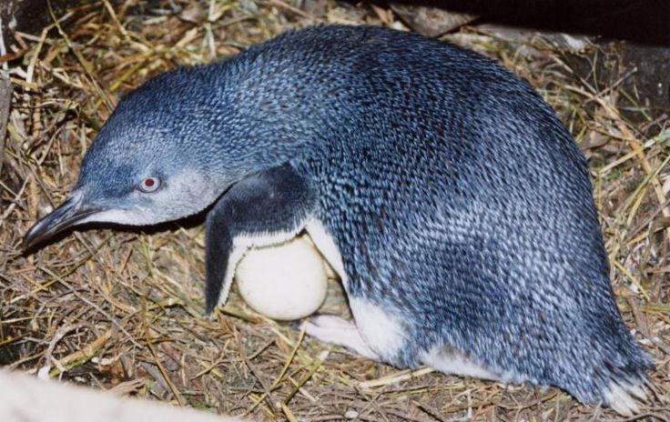
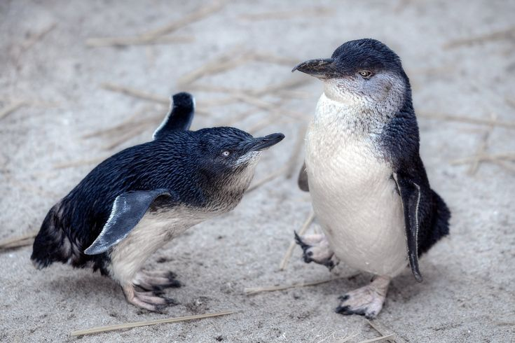
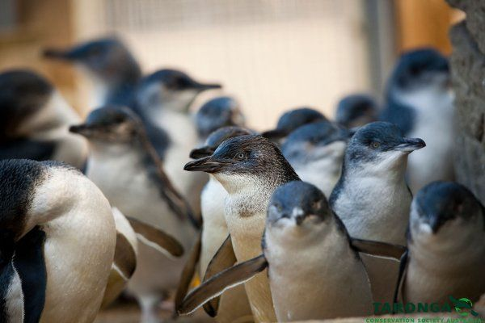
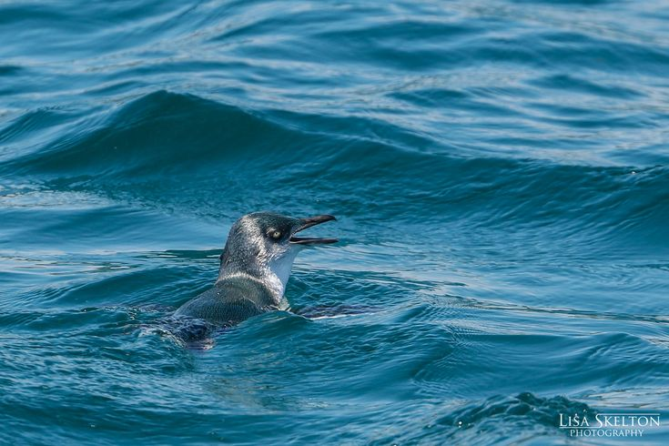
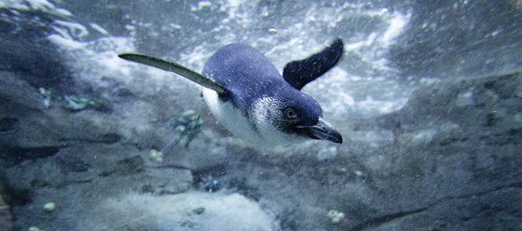
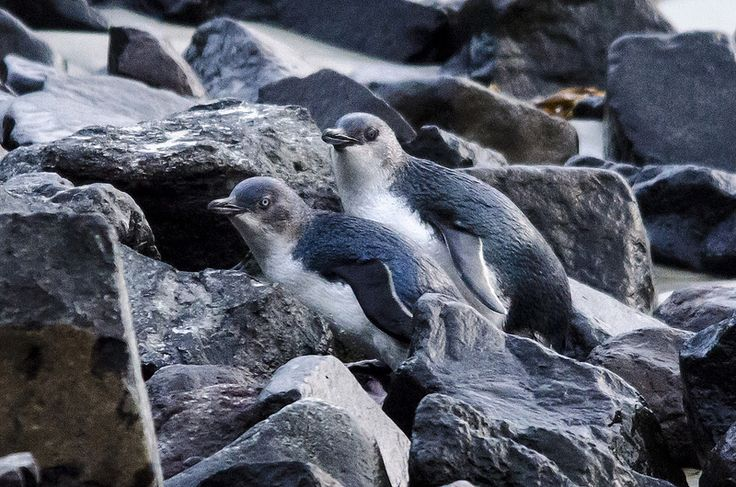

Pingüino Azul
Eudyptula minor
Conocidos también como "pingüinos hada", son la especie más pequeña del mundo. Destacan por el hermoso plumaje azul índigo de su espalda y cabeza.
Conocidos también como "pingüinos hada", son la especie más pequeña del mundo. Destacan por el hermoso plumaje azul índigo de su espalda y cabeza.



30 — 33 cm
1.0 — 1.5 kg
Australia y N. Zelanda
Anchoas y calamares



